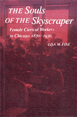

Documents and explains the transformation of clerical work from a male to a female occupation in the late 19th century
Documents and explains the transformation of clerical work from a male to a female occupation in the late 19th century


 Documents and explains the transformation of clerical work from a male to a female occupation in the late 19th century
Documents and explains the transformation of clerical work from a male to a female occupation in the late 19th century

|  |
The Souls of the SkyscraperFemale Clerical Workers in Chicago, 1870-1930Lisa M. Finecloth EAN: 978-0-87722-674-1 (ISBN: 0-87722-674-1) |
"Fine's book adds to the debate over why the gender composition of the clerical labor force changed so quickly and completely."
—American Studies
During the late nineteenth century, a visitor to the city of Chicago would have looked in wonder at the many strange, new, and exciting sights: the nation’s first skyscrapers, the bustling and congested streets, the large department stores, and the business girls. The Souls of the Skyscraper documents and explains the transformation of clerical work from a male to a female occupation amidst the industrialization and urbanization of the United States. Using literary, organizational, statistical, cinematic, and archival evidence primarily from Chicago, Lisa M. Fine explains the historical reasons why clerical work became women’s work.
The appearance of the female clerical worker in the business office signaled two on-going developments: the simple shift of women entering and dominating office jobs that were previously held by men, and the changing gender definition of clerical work. This new opportunity for employment provided women with relatively well-paying and respectable jobs, even though the prestige of the clerical positions was devalued as more women were hired. While economic forces contributed to this process of occupational change, the vocational education of women, the availability of various types of social services such as group homes (e.g. the Eleanor Residences), and the evolving image of the working girl in the popular culture encouraged women to seek clerical positions.
Fine explores the realms where the gender definition of clerical work was discussed and negotiated: among technical experts, in the popular culture, in the prescriptions and actions of civic leaders, and in the private worlds of clerical workers themselves. In revealing the dynamics of change within the clerical sector, she enhances our understanding of occupational sex-typing.
Lisa M. Fine is Assistant Professor of History at Michigan State University.
American Studies
Women's Studies
Women in the Political Economy, edited by Ronnie J. Steinberg.
No longer active.
Women in the Political Economy, edited by Ronnie J. Steinberg, includes books on women and issues of work, family, social movements, politics, feminism, and empowerment. It emphasizes women's roles in society and the social construction of gender and also explores current policy issues like comparable worth, international development, job training, and parental leave.
© 2015 Temple University. All Rights Reserved. This page: http://www.temple.edu/tempress/titles/498_reg.html.